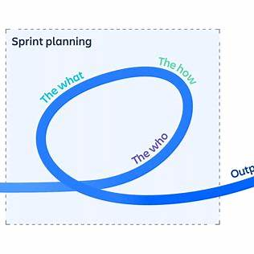

Overview
Agile focuses on delivering working software in small increments (often called iterations or sprints). Teams adjust plans based on feedback and changing requirements.
Iterative development with frequent feedback and improvement.
Agile focuses on delivering working software in small increments (often called iterations or sprints). Teams adjust plans based on feedback and changing requirements.
